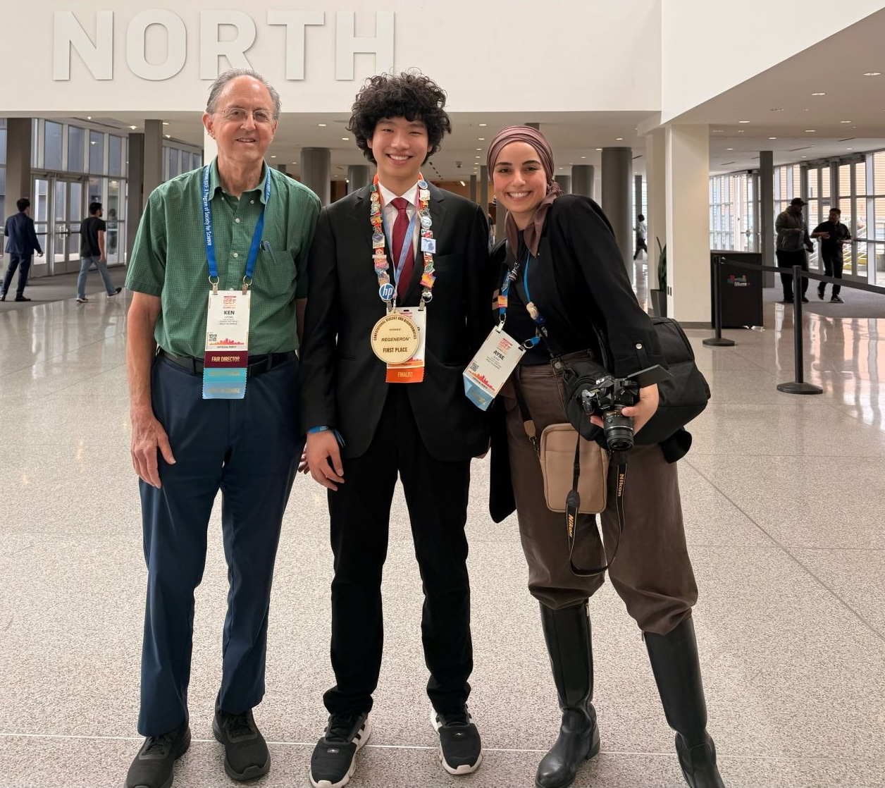
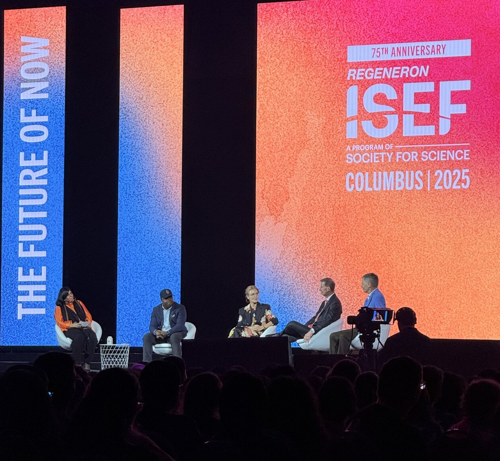
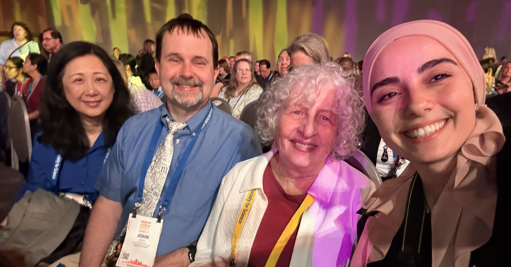
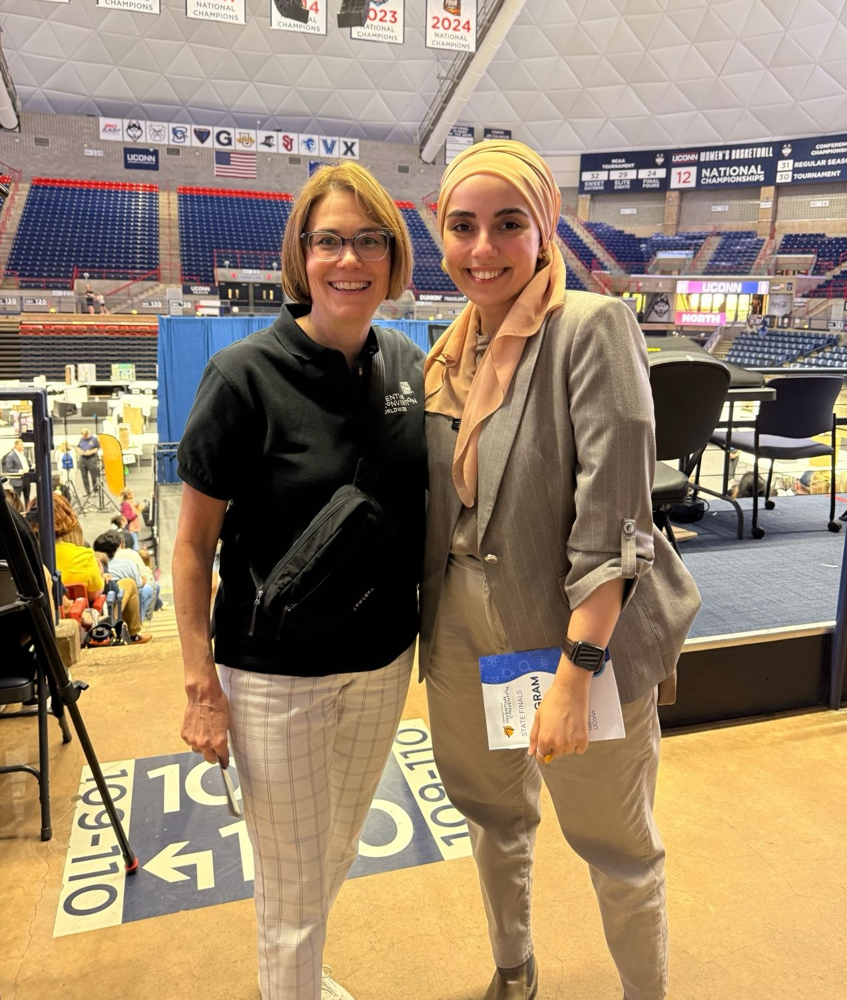
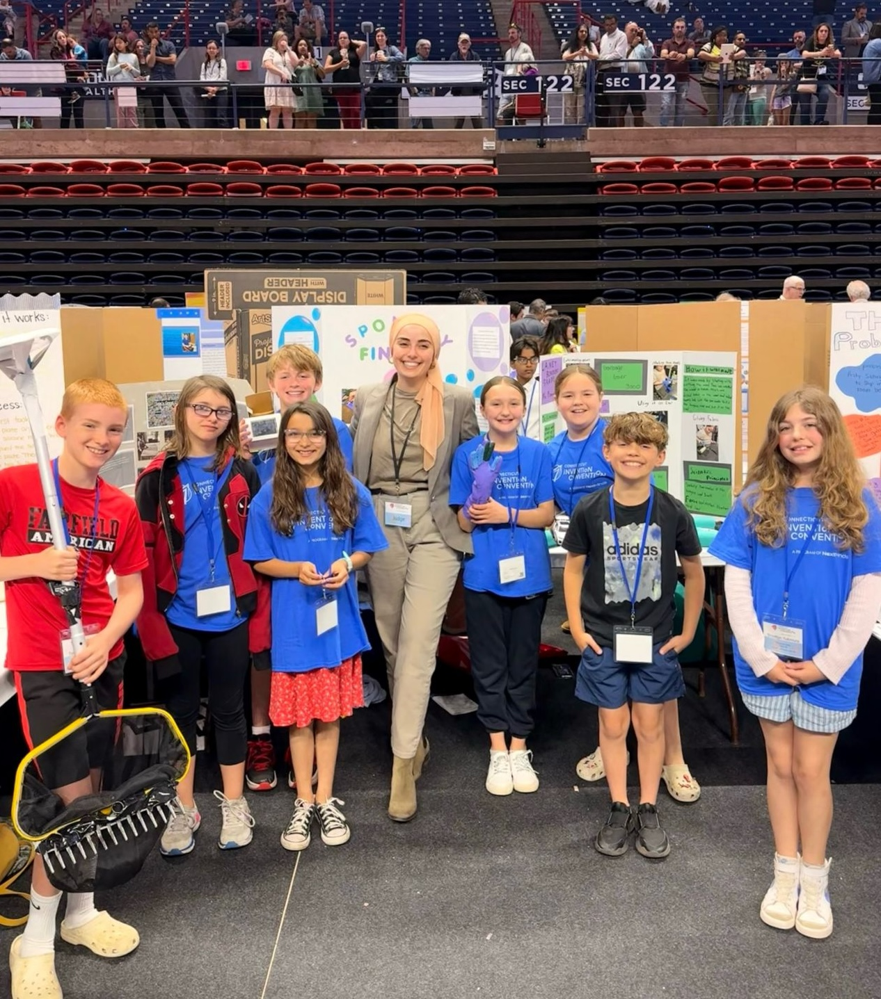
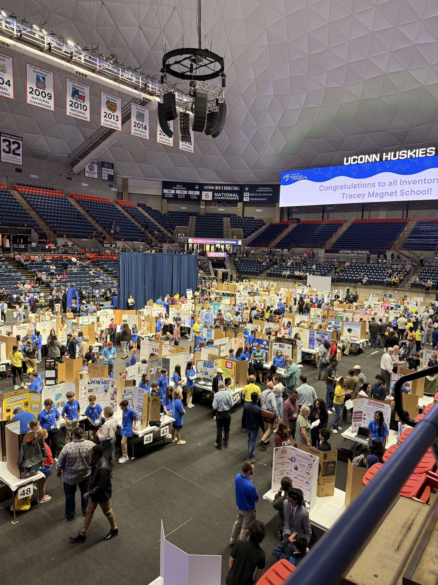

A mix of work, events, and everything in between.



We brought over 25 student projects to ISEF 2025 in Columbus. One of our students earned First Place in Computational Biology and Bioinformatics. He practiced his presentation with me before judging day, and I remember thinking he had a strong presence; it was incredibly rewarding to see that reflected in the results.
In addition, seven of our students placed 2nd, 3rd, or 4th in their categories, and seven students received Special Awards, highlighting the overall strength and quality of the work presented.



I had the opportunity to be part of the Connecticut Invention Convention at UConn as a judge. It was a great experience to engage with young inventors, listen to their ideas, and observe how they approach problem-solving at an early age.
Beyond judging, being in that environment offered a closer look at how student-centered innovation events come together, from organization and coordination to the energy created by students, educators, and families.
Experiences like this are always a reminder of how powerful it is to create spaces where students feel encouraged to think, build, and share their ideas.